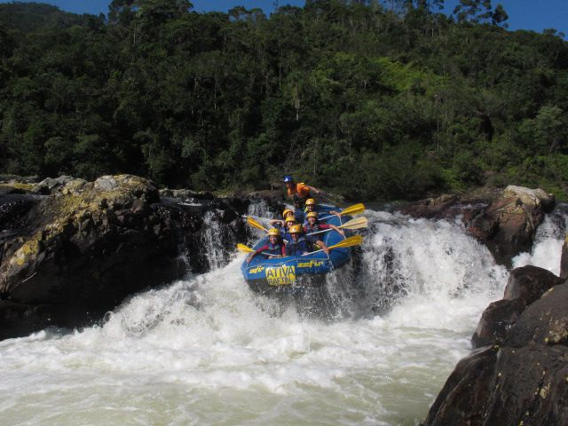
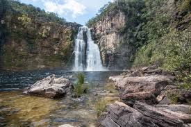
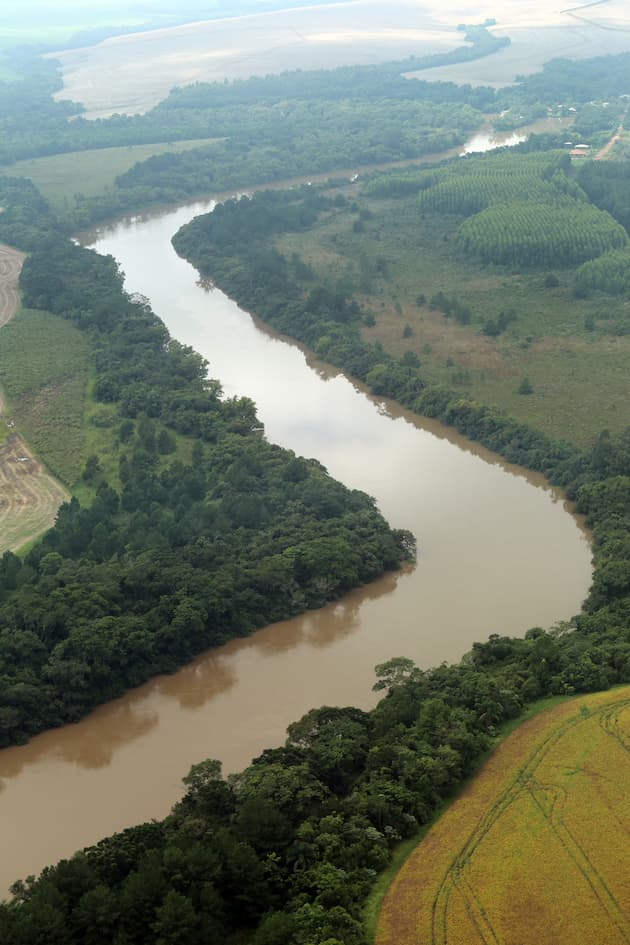
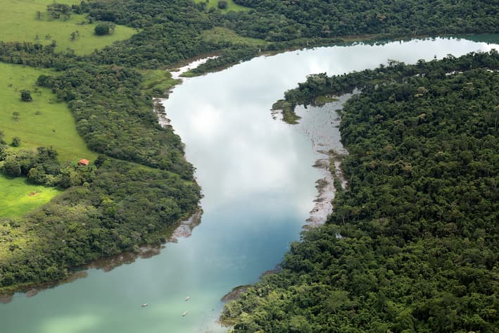
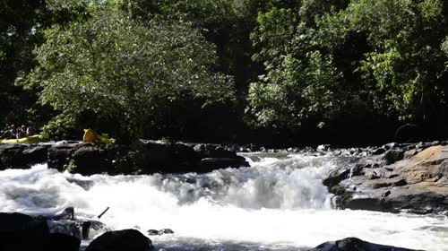
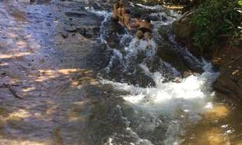

Nossa missão é proporcionar aventuras inesquecíveis com segurança, diversão e contato com a natureza. Trabalhamos para criar experiências emocionantes para famílias, grupos de amigos e amantes da aventura.

Nossa missão é proporcionar aventuras inesquecíveis com segurança, diversão e contato com a natureza. Trabalhamos para criar experiências emocionantes para famílias, grupos de amigos e amantes da aventura.
A Rafting em Corredeiras nasceu da paixão por rios, natureza e aventura. O que começou com pequenos passeios entre amigos tornou-se uma empresa dedicada a proporcionar experiências inesquecíveis para pessoas de todas as idades.

Ao longo dos anos, conquistamos a confiança de centenas de visitantes. Nossa equipe é formada por profissionais treinados que priorizam a segurança, o respeito ao meio ambiente e a diversão de cada cliente.




